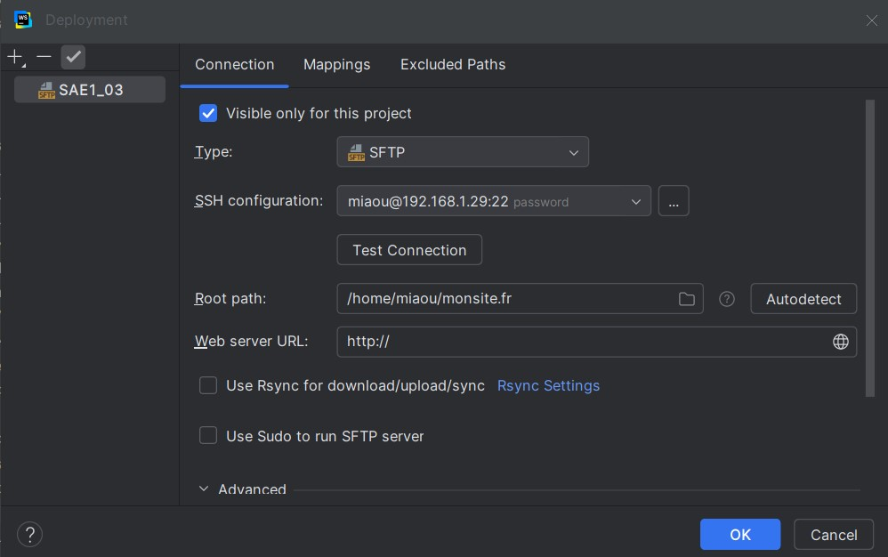

Nous avons lié notre machine virtuelle avec WebStorm pour faciliter le travail. En effet, cette fonctionnalité de lien de serveur nous a permis d'ajouter automatiquement les fichiers source du code sans devoir effectuer de transferts inutiles et superflus.
Voici une capture d'écran montrant la liaison :
